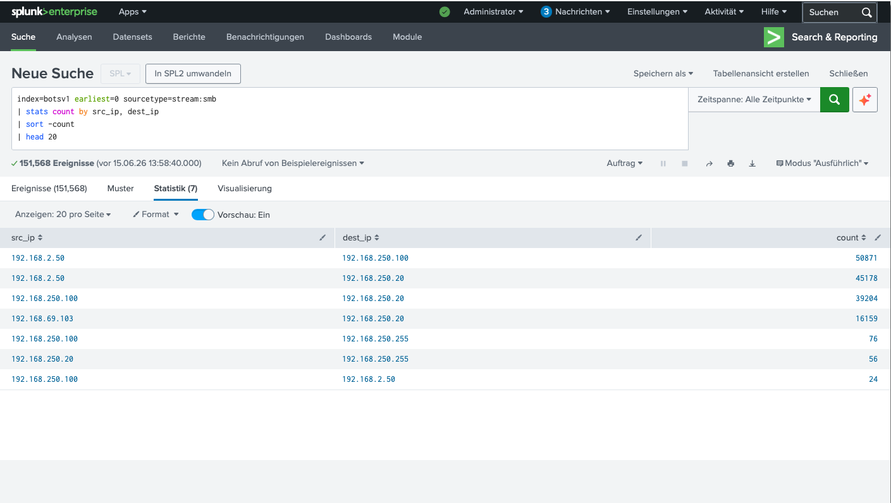

Kontext
In der vorherigen Investigation haben wir Suricata-IDS-Alerte identifiziert,
die Cerber Ransomware auf dem Host 192.168.250.20 detektiert haben.
Die Frage ist nun: Wie ist die Ransomware dort hingekommen?
Warum SMB für Lateral Movement?
SMB (Server Message Block) ist das Standard-Protokoll für Windows-File-Sharing und arbeitet auf Port 445. In den meisten Unternehmensnetzwerken ist SMB zwischen internen Hosts erlaubt, weil Benutzer Dateien auf Netzlaufwerken (Shares) austauschen müssen. Genau diese permissive Konfiguration macht SMB zum perfekten Vektor für Ransomware.
Wie funktioniert SMB-basiertes Lateral Movement?
- Credential Harvesting: Die Ransomware extrahiert Windows-Anmeldedaten (NTLM-Hashes) aus dem Speicher des infizierten Hosts — beispielsweise mit Mimikatz oder LSASS-Dump.
- Pass-the-Hash / Pass-the-Ticket: Mit diesen gestohlenen Credentials authentifiziert sich die Malware auf anderen Hosts im Netzwerk — ohne das Passwort im Klartext zu kennen.
- Admin-Shares (C$, ADMIN$): Windows hat versteckte administrative Shares (z.B.
\\Zielhost\C$), die automatisch für Administratoren verfügbar sind. Die Ransomware nutzt diese, um Dateien zu kopieren. - Remote Service Creation: Über SMB und RPC kann die Malware auf dem Zielhost einen Dienst installieren (z.B.
sc.exeoderPsExec) und die Payload ausführen. - File Encryption: Sobald die Ransomware läuft, verschlüsselt sie über SMB alle erreichbaren Shares — nicht nur lokale Festplatten, sondern auch Netzlaufwerke.
Warum ist SMB so gefährlich? SMB verbindet nahezu alle Windows-Systeme in einem Unternehmen. Wenn ein einzelner Host mit lokalen Admin-Rechten kompromittiert wird, kann die Ransomware über SMB das gesamte Netzwerk erreichen — Server, Workstations, Backup-Systeme. Diese Eigenschaft macht SMB zu einem der wichtigsten Angriffsvektoren für Ransomware wie WannaCry, NotPetya und Cerber.
Technische Details: SMB verwendet NTLM-Authentifizierung (Challenge-Response). Ein gestohlener NTLM-Hash erlaubt direkte Authentifizierung auf anderen Hosts, ohne das Klartext-Passwort zu benötigen. Das ist der Grund, warum Pass-the-Hash-Angriffe so effektiv sind — und warum SMB ohne zusätzliche Schutzmaßnahmen (SMB-Signing, EPA, Credential Guard) ein erhebliches Risiko darstellt.
Die Analyse
Wir analysieren alle SMB-Verbindungen, um den Verbreitungspfad der Ransomware zu rekonstruieren.
Das Ergebnis zeigt 7 unique SMB-Verbindungen mit 151.568 Events insgesamt. Die Top-Verbindungen sind eindeutig:

Abb. 1 — SMB-Verbindungen: 192.168.250.100 → 192.168.250.20 (39.204 Events) deutet auf Ransomware-Spread hin
| src_ip | dest_ip | Events | Bewertung |
|---|---|---|---|
| 192.168.2.50 | 192.168.250.100 | 50.871 | Nessus Scanner → Host |
| 192.168.2.50 | 192.168.250.20 | 45.178 | Nessus Scanner → Ziel |
| 192.168.250.100 | 192.168.250.20 | 39.204 | Ransomware Spread! |
| 192.168.69.103 | 192.168.250.20 | 16.159 | Externe IP → Ziel |
| 192.168.250.100 | 192.168.250.255 | 76 | Broadcast |
| 192.168.250.20 | 192.168.250.255 | 56 | Broadcast |
| 192.168.250.100 | 192.168.2.50 | 24 | Host → Scanner |
Erkenntnisse
1. Ransomware-Spread: 192.168.250.100 → 192.168.250.20
Die Verbindung 192.168.250.100 → 192.168.250.20 mit
39.204 SMB-Events ist der klarste Indikator für Lateral Movement.
Der Host 192.168.250.100 war zuerst infiziert und hat die Ransomware über SMB
auf 192.168.250.20 übertragen.
2. Externe IP: 192.168.69.103
Die IP 192.168.69.103 (ein anderes Subnet: 69.x) hat ebenfalls
SMB-Verbindungen zu 192.168.250.20 aufgebaut (16.159 Events).
Das deutet darauf hin, dass die Ransomware möglicherweise über mehrere
Subnetze hinweg verbreitet wurde.
3. Nessus Scanner Traffic: 192.168.2.50
Die hohen Event-Zahlen von 192.168.2.50 (Nessus Scanner) sind
kein Lateral Movement, sondern Scan-bedingter SMB-Traffic.
Das ist normal für Vulnerability-Scans und sollte nicht mit Ransomware
verwechselt werden.
Critical Finding: Die SMB-Verbindung 192.168.250.100 → 192.168.250.20 (39.204 Events) ist der Haupthinweis auf Ransomware-Lateral-Movement. In einer realen Umgebung wäre hier sofort eine Isolation des Hosts 192.168.250.100 erforderlich.
Attack-Pfad
Basierend auf der SMB-Analyse lässt sich der Verbreitungspfad rekonstruieren:
- Initial Infection: 192.168.250.100 wird infiziert (möglicherweise über Phishing oder Exploit)
- Reconnaissance: Nessus-Scan (192.168.2.50) kartiert das Netzwerk
- Lateral Movement: 192.168.250.100 → 192.168.250.20 via SMB (39.204 Events)
- Cross-Subnet: 192.168.69.103 → 192.168.250.20 (möglicherweise weitere Infektion)
Defensive Maßnahmen
Basierend auf dieser Analyse wären folgende Maßnahmen in einer realen Umgebung erforderlich gewesen:
SPL-Query
Unterm Strich
Diese SMB-Analyse zeigt, wie wichtig Netzwerk-Forensik im SOC ist. Ohne die SMB-Logs hätten wir den Verbreitungspfad der Ransomware nicht rekonstruieren können. Die Verbindung 192.168.250.100 → 192.168.250.20 mit 39.204 Events ist eindeutig der "Rauch", der auf das "Feuer" hinweist.
Next Steps: Sysmon Process Creation, um die exakten Prozesse und Kommandozeilen-Argumente der Ransomware zu identifizieren.